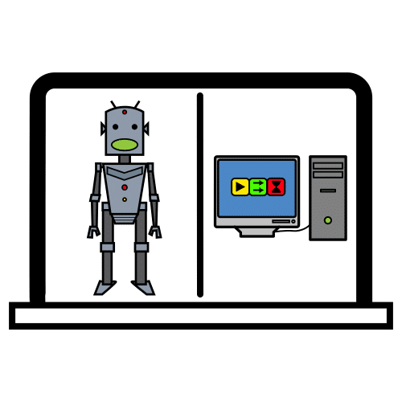
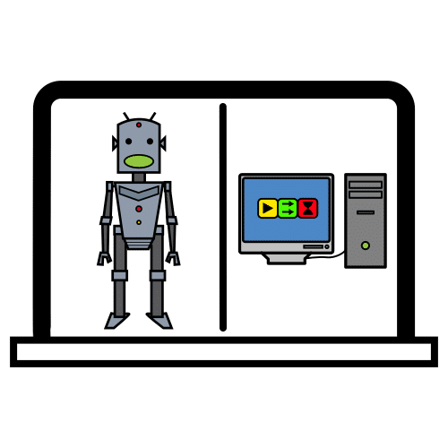
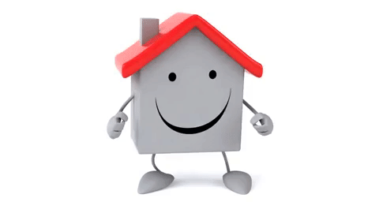
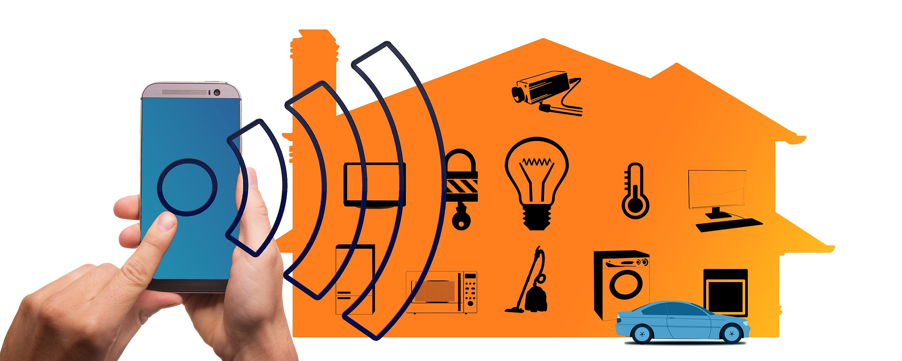
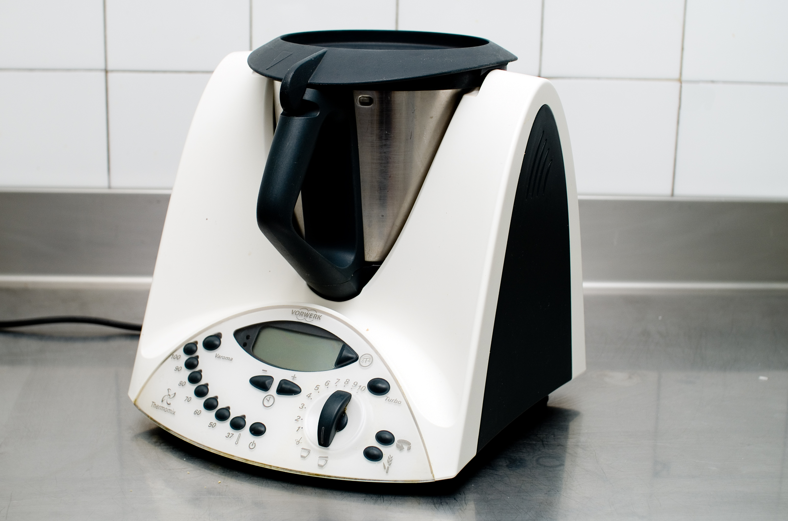
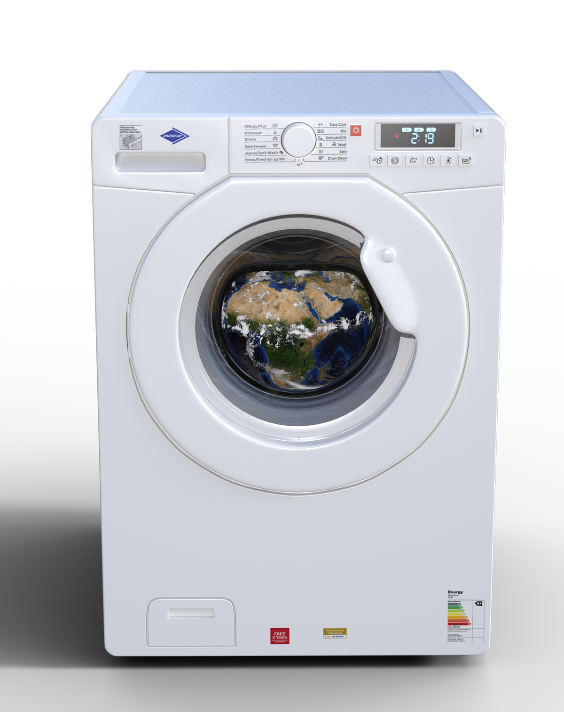

Diccionario
Programar



Seguro que recordarás el cuento popular de los tres cerditos y cada una las casas que ellos construyeron. También sabrás cuál fue la suerte que corrió cada una de las casas.
Ni decir tiene, que el cerdito que optó por construir su casa con ladrillos y cemento dedicó más esfuerzo y tiempo, afanado en tener un hogar más seguro y confortable.
A lo largo de los tiempos, el ser humano también ha luchado por el bienestar y la mejorara de su calidad de vida. Y eso lo puedes ver reflejado claramente en el tipo de casas construidas en la actualidad. Basta con pulsar un botón o utilizar tu propia voz para que un dispositivo comience a aspirar la casa. Puedes, también, encender y apagar luces, controlar la temperatura del hogar o visualizar desde un smartphone todo lo que ocurre dentro de ella.
Todas estas acciones son posibles gracias al uso de la tecnología.
Y tú, ¿qué tipo de casa construirías para mejorar la vida de las personas?
Te propongo el reto de diseñar y programar tu propia casa inteligente y entender así cómo funcionan muchos de esos dispositivos. Haz clic sobre las aplicaciones para conocer el uso que le vamos a dar a cada una de ellas.
La palabra en inglés “Smart” traducida como “inteligente” se refiere a un conjunto de dispositivos que cumplen unas características comunes. Generalmente, pueden comunicarse de manera inalámbrica con otros dispositivos a través de Bluetooth o Wifi e interactuar entre ellos.
Surgen, cada día, más dispositivos “inteligentes” con los últimos avances tecnológicos. Uno de los más conocidos, el smartphone, el teléfono inteligente que llevamos en nuestros bolsillos no solo sirve para comunicarse entre personas, sino que se ha convertido en un dispositivo capaz de controlar y monitorizar cámaras, electrodomésticos, calefacción y muchos dispositivos de nuestro hogar.
Otros dispositivos con esta tecnología, que seguro ya conoces, son los relojes inteligentes, las smartTV, smartglasses, weareable
Con la automatización del hogar, también encontramos infinidad de dispositivos inteligentes que nos hacen la vida más cómoda y segura.


Antes de iniciar el reto de construir tu propio sistema de casa inteligente, vamos a proponerte unas cuestiones para que pienses sobre ellas. No tienes que responder a todas, pero te invitamos a pensar un poco sobre ellas:
¡La robótica juega un papel importante en las casas inteligentes! Se encarga de utilizar la tecnología para diseñar dispositivos y programarlos para realizar tareas de forma autónoma e interactúen entre ellos.
A continuación te muestro diferentes aparatos que podemos encontrar en el hogar y pueden controlarse con otros dispositivos.
Comenta con tus compañeros y compañeras .




Observa el vídeo e intenta adivinar la función que tienen los distintos dispositivos de esta casa. Después, comenta con tus compañeros tus impresiones y con sus aportaciones, encontrad una respuesta común.
¿Qué otros dispositivos te gustaría que hubiera en una casa inteligente? Estos aparatos tecnológicos responden a nuestras necesidades. Como, por ejemplo, regular la temperatura de la casa mediante un termostato que controla la calefacción.
Pero, muchas de estas necesidades son creadas por las personas. ¿Crees que todos estos dispositivos son necesarios en nuestra vida?
Definición: Conjunto de mensajes que permiten la comunicación e intercambio de información entre dispositivos o máquinas. Ejemplo: A través del protocolo Bluetooth puedes conectar las auriculares inalámbricos con la Tablet.
Obra publicada con Licencia Creative Commons Reconocimiento No comercial Compartir igual 4.0